01
Sea bream, sea bass, and meagre raised in offshore cages on a 375 ha government concession at Ras El Ma. Biosecurity protocols designed-in, not retrofitted.

→SEARULEA is a vertically integrated Mediterranean aquaculture operator. Offshore farming at Ras El Ma. Onshore processing, IQF, and certified export logistics — one chain, one operator, one traceable lot.
Sea bream, sea bass, and meagre raised in offshore cages on a 375 ha government concession at Ras El Ma. Biosecurity protocols designed-in, not retrofitted.
Onshore processing built to European standards. Solar-powered facility, ONSSA-certified handling, full IoT chain of custody from harvest to shipping pallet.
IQF freezing locks freshness at peak quality. Each lot tagged, documented, and traceable end-to-end — one interlocutor, one document set, one promise kept.
Certified export logistics via the port of Ras Kebdana. Roadmap documented, volumes growing with you — long-term partnerships available from Phase 1.
SEARULEA does not only produce fish.
It builds Morocco's capacity to no longer depend on others to do it.
Morocco has two coastlines, 3,500 kilometres of shore, and direct access to the European market. Yet it still imports its fingerlings and buys its fish feed abroad — while foreign operators structure the industry its geography made obvious.
SEARULEA changes that, structurally. Offshore concession signed. Hatchery and feed unit on the roadmap. What is built at Nador today, Algeria, Tunisia, and Mauritania will look to tomorrow — proof an African operator can meet international export standards from day one.
From our shores, for the world.
Government-signed concession at Ras El Ma. Long-term operational control over a Mediterranean farming zone designed for scale.
Documented phased ramp-up. Commercial partnerships structured before launch. Volumes that grow with your contract.
Inclusion engineered into the capital plan — not a corporate report at year-end. Hiring and training anchored locally in Nador.
Every batch tracked from cage to truck. ONSSA certified, built to European norms, biosecurity and solar energy designed-in from day one.
Sea bream, sea bass, and meagre — raised in the Mediterranean and exported via Ras Kebdana. Full documentation set. IoT traceability per lot. Roadmap of growing volumes for long-term partners.
Open trade brief Investors375 ha concession secured. Demand documented, market under-supplied. The value isn't in the cages alone — it's in the integrated chain, with hatchery and feed on the roadmap to anchor regional infrastructure.
Request investor pack Press & institutionsBuilt well from day one. Biosecurity, solar energy, 40% women in the CAPEX payroll, IoT traceability — engineered in, not bolted on for an annual report. The model North Africa will look to next.
Press materialsTwo coastlines. 3,500 km of shore. Direct access to Europe.
SEARULEA fits into that continuity.
At Ras El Ma, on a 375-hectare offshore concession, we build an integrated aquaculture chain designed to operate as a whole: sea farming, onshore processing, export logistics, traceable operations. One step after another.
Biosecurity from the start. Solar on site. Training and employment anchored locally. Choices integrated at conception, not corrections at the end.
In time, the hatchery and feed unit will serve the broader development of the sector across North Africa.